Multivariate Statistical Diagnosis of Hydraulic Cooler Faults
Statistics, simulation and model training in R. Generated using R version 4.6.1 (2026-06-24 ucrt).
The 14-slide presentation uses the results and models calculated in R. Open R/Presentation_Demo.R to follow the main calculations alongside the slides.
Data preparation in R
- The original UCI archive is checked with SHA-256, then all 14 physical sensor matrices are read and summarized in R.
- There are 2,205 cycles, including 1,449 stable cycles. Each cycle lasts 60 seconds.
- The six core summaries are temperature mean and slope, flow mean, pressure SD, power mean and vibration mean. Derived CE, CP and SE channels are excluded.
- For inference, stable readings are averaged in 48 settings crossed with three cooler conditions. Cooler condition and recording phase remain perfectly confounded.
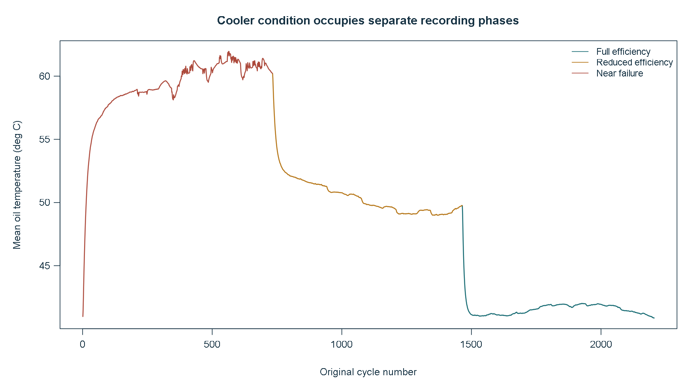
Mean vectors
- The averages describe the condition profiles. Near failure has higher mean temperature and lower mean flow in this experiment.
| Condition | Temperature | Temperature trend | Flow | Pressure SD | Motor power | Vibration |
|---|---|---|---|---|---|---|
| Full efficiency | 41.64272 | 0.00259 | 6.52921 | 47.32210 | 2552.37991 | 0.54558 |
| Reduced efficiency | 49.72298 | 0.00431 | 6.48871 | 46.61075 | 2471.89925 | 0.61431 |
| Near failure | 60.18636 | 0.00140 | 4.91869 | 51.19627 | 2504.40137 | 0.69632 |
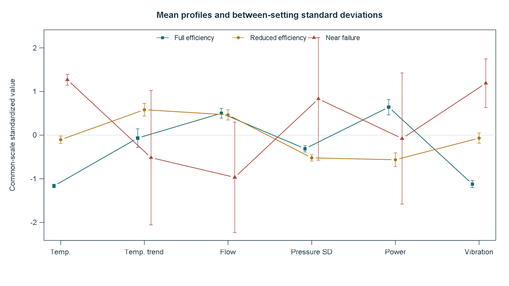
Covariance and correlation
- Covariance includes marginal variability and relationships between features. Correlation gives the dimensionless linear relationship.
- For near failure, flow and pressure fluctuation have correlation -0.997. The sensor readings are strongly related, so a joint model is useful.
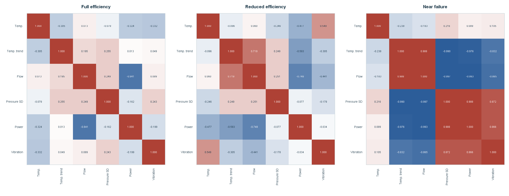
Generalized variance
- The covariance determinant describes joint spread on the common scale. Its sixth root is about 6.1 times larger for near failure than for full efficiency.
| Condition | log determinant | Sixth-root generalized variance |
|---|---|---|
| Full efficiency | -29.9839 | 0.006756 |
| Reduced efficiency | -29.6584 | 0.007133 |
| Near failure | -19.1573 | 0.041054 |
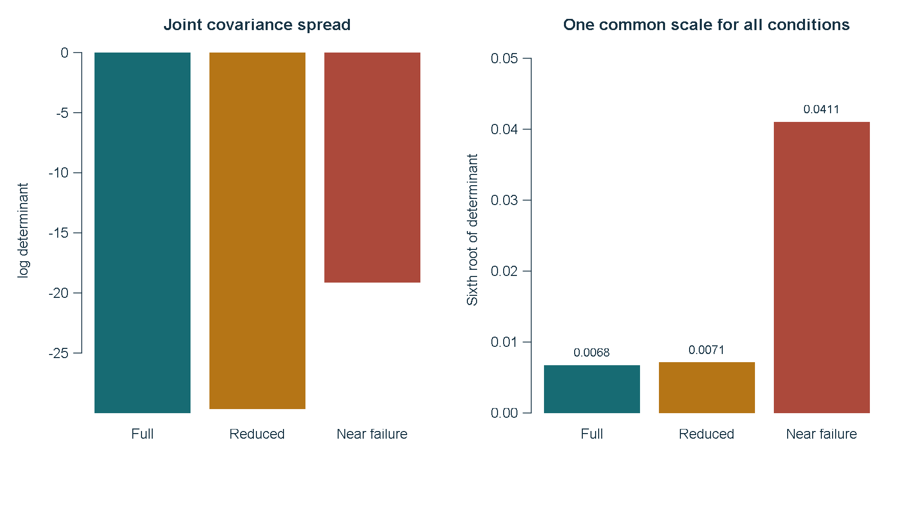
Skewness, kurtosis and distribution checks
- Checks are performed within each condition. Pooling three different means would create a mixture rather than test a meaningful within-condition Gaussian model.
- R generates its own 999 finite-sample Gaussian references at n = 48 and p = 6. The population kurtosis target is 48, but fitted finite-sample behaviour differs.
- The slides and this report use the same R simulation results. These checks suggest that the Gaussian model is an approximation, so we also test its predictions on separate data.
| Condition | Mardia skewness | Mardia kurtosis | R skewness MC p | R kurtosis MC p |
|---|---|---|---|---|
| Full efficiency | 9.4278 | 42.4629 | 0.032 | 0.106 |
| Reduced efficiency | 8.1804 | 43.5790 | 0.106 | 0.280 |
| Near failure | 13.6309 | 44.1645 | 0.001 | 0.436 |
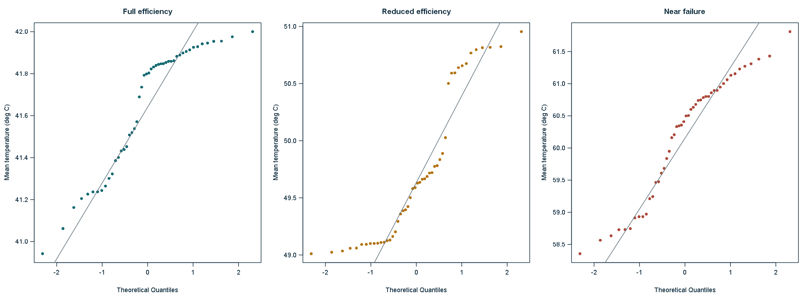
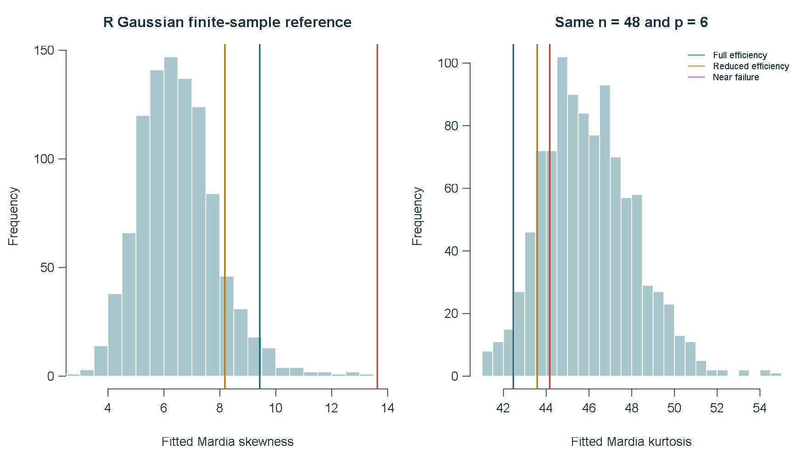
Maximum likelihood estimation
- The Gaussian model estimates its means and covariances using maximum likelihood. Shrinkage candidates are considered only for diagnostic model selection.
- The two-feature numerical fit uses optim(method="BFGS") with an analytical gradient. It converged with maximum parameter difference 3.012e-10 and log-likelihood gap 5.684e-14.
- Means, log standard deviations and atanh(correlation) keep the fitted bivariate covariance valid.
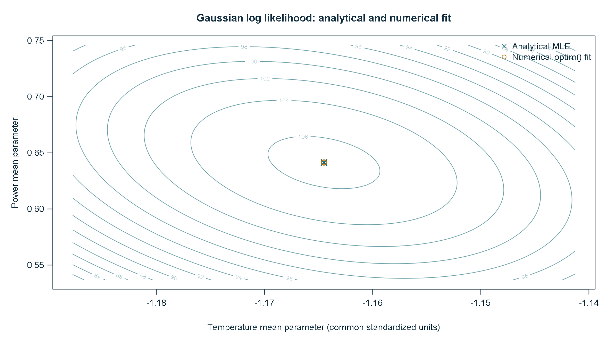
MANOVA with matched setting effects
- Manual SSCP matrices agree with stats::manova(). Roy = 251.252891; Wilks = 0.000791123; residual df = 94.
- The joint mean profiles differ under the reference model. This is a recorded cooler/phase association, not an identified causal cooler effect.
- The table gives native summary.manova() approximations. Roy's general F reference is an upper-bound convention.
| R test | Statistic | Approximate F | Numerator df | Denominator df | R reference p |
|---|---|---|---|---|---|
| Wilks | 0.000791 | 512.5382 | 12 | 178.0000 | 4.468e-131 |
| Pillai | 1.796473 | 132.4003 | 12 | 180.0000 | 1.644e-82 |
| Hotelling-Lawley | 255.263837 | 1871.9348 | 12 | 176.0000 | 1.192e-178 |
| Roy | 251.252891 | 3768.7934 | 6 | 90.0000 | 8.868e-106 |
Hotelling-Lawley has more than one F approximation. The slides use the native R reference above. An alternative approximation is retained for comparison with the original implementation: F = 1878.4104, denominator df = 135.3927, p = 3.975e-144. The trace and conclusion agree. Both references are explicitly labelled.
Paired Hotelling T-squared
- Each comparison uses 48 matched six-feature difference vectors. The three comparisons receive Holm adjustment.
- The F reference assumes independent Gaussian differences. Sign-flip and circular-block sensitivities retain matching but do not resolve the phase limitation.
| Difference | T2 | iid p | Holm iid p | Sign-flip p |
|---|---|---|---|---|
| Reduced efficiency minus Full efficiency | 17168.874 | 3.634e-52 | 7.268e-52 | 0.001 |
| Near failure minus Full efficiency | 29407.023 | 4.611e-57 | 1.383e-56 | 0.001 |
| Near failure minus Reduced efficiency | 5347.418 | 1.377e-41 | 1.377e-41 | 0.001 |
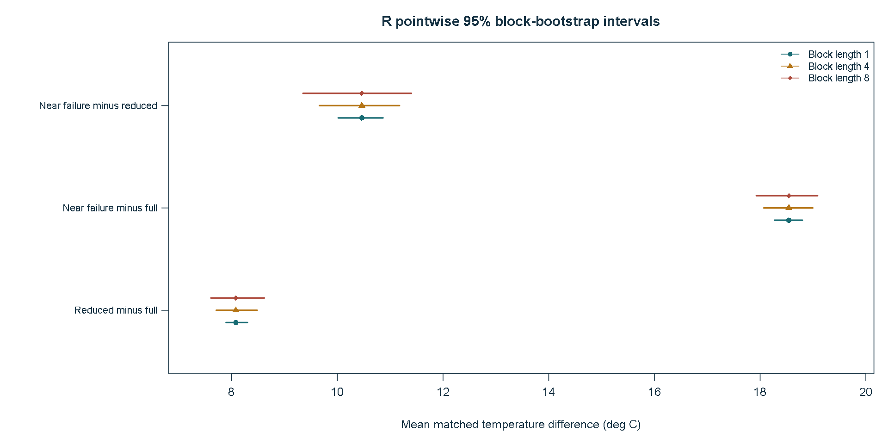
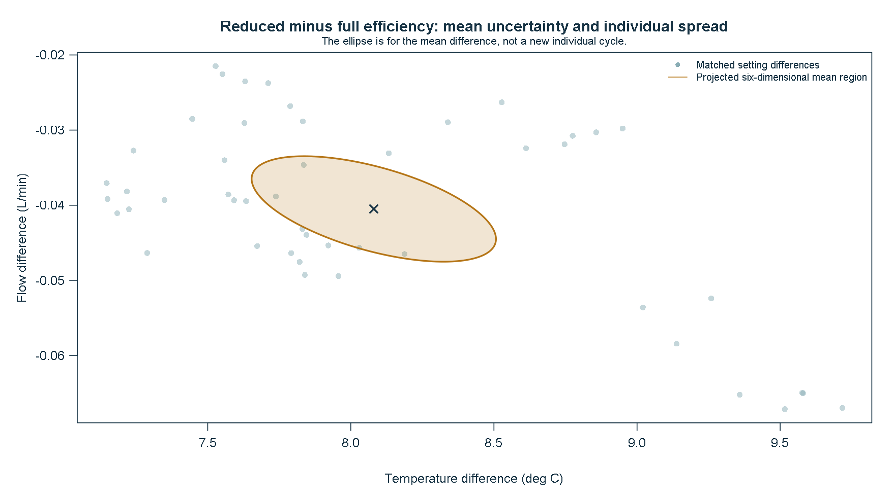
Covariance equality tests
- Box M = 732.2726; correction = 0.060115; corrected statistic = 688.2522; p = 8.358e-118.
- The Gaussian ML covariance likelihood ratio is 747.8529 with 42 df; p = 5.003e-130. It uses ML divisors n, whereas Box M uses n - 1 covariance weights.
- Both challenge exact covariance equality. Model prediction is assessed separately; a shared covariance can still win grouped validation.
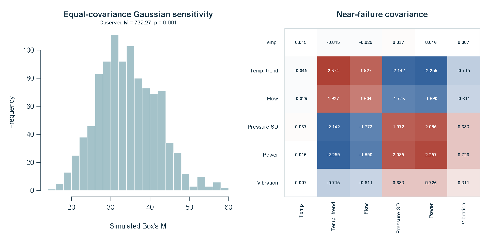
Partial correlation and explanatory regression
- Each feature is adjusted for additive categorical cooler/phase, valve, pump and accumulator associations using lm.fit().
- Temperature-vibration correlation changes from 0.944 to 0.206 after adjustment.
- The explanatory temperature regression R2 is 0.992847. This is in-sample interpretation, not diagnostic validation. Recorded component labels never enter the diagnostic score.
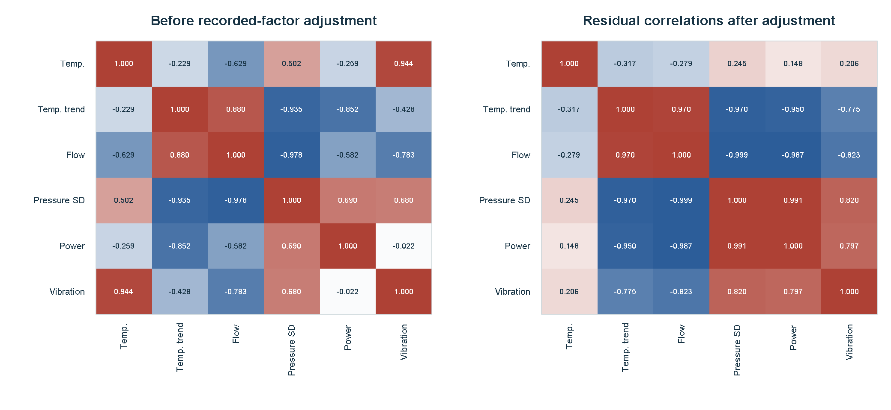
Simulation and resampling in R
- Independent Gaussian null simulations are separate from matched wild resampling. The restricted wild procedure uses null residuals and one sign for the entire setting block.
- The full-residual null-centred variant is labelled separately. Circular blocks of length 1, 4 and 8 are sensitivities, not a guarantee of independence.
- The stable holdout setting bootstrap is [100%, 100%] because every observed setting is correct. It cannot prove zero future error.
| Reference | Draws | 95% Roy cutoff | Monte Carlo p |
|---|---|---|---|
| gaussian_iid_null | 999 | 0.19031 | 0.001 |
| wild_restricted | 999 | 0.24285 | 0.001 |
| wild_full_residual | 999 | 0.24501 | 0.001 |
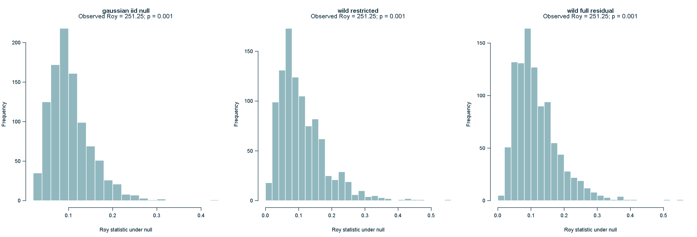
R model training and final held-out evaluation
- The 36 development settings supply 1,089 stable cycles. Six-fold cross-validation keeps each setting together and fits the scaler inside each fold.
- The candidate families are diagonal, shared and separate Gaussian covariance with six shrinkage values, plus a temperature-only baseline. The objective averages intact and complete-TS2-outage log loss.
- R independently selects shared covariance with alpha = 0. The model specification is saved before the 12 held-out settings are evaluated.
- The R fold plan uses its own deterministic group-balancing tie rule, and is saved for inspection. Folds can differ from the earlier implementation; the selected model and all final confusion matrices agree.
| Model | Selected alpha | Intact balanced accuracy | Without TS2 balanced accuracy |
|---|---|---|---|
| temperature | 0 | 100.00% | 33.33% |
| diagonal | 0 | 100.00% | 99.44% |
| shared | 0 | 100.00% | 100.00% |
| full | 0 | 100.00% | 99.72% |
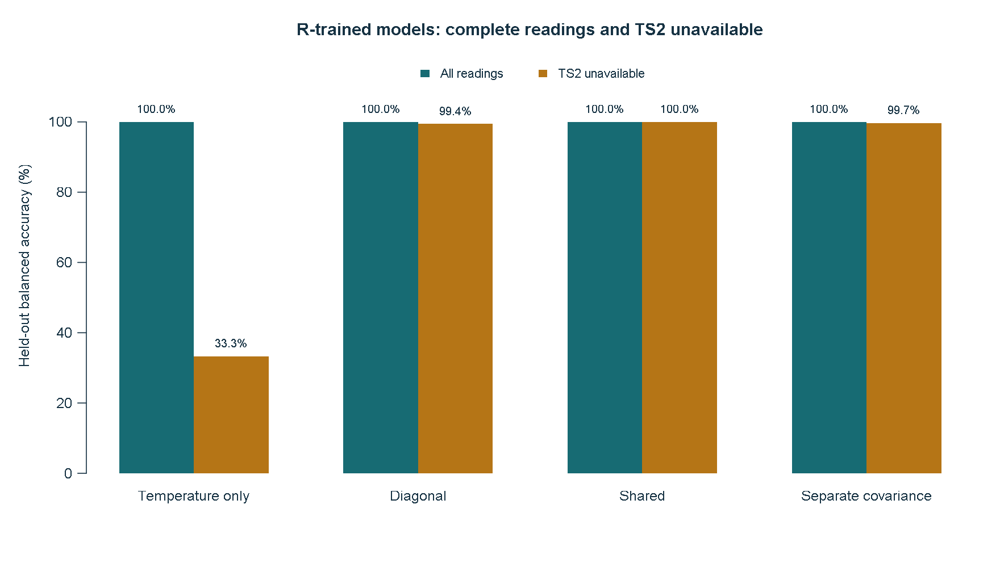
- Removing TS2 removes both mean and slope. The score uses the observed mean subvector and covariance submatrix, not a zero-filled sensor reading.
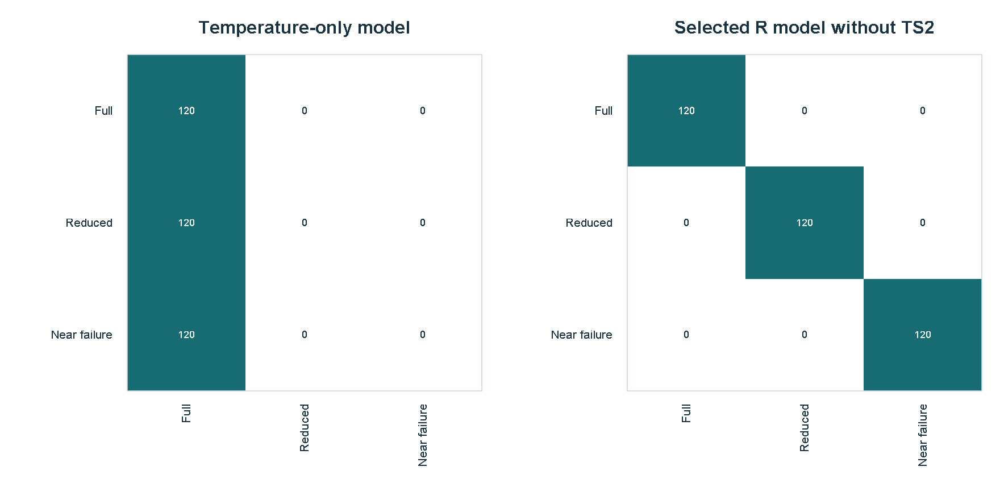
Transition and input-offset stress checks
- The separate transition subset contains 266 cycles from held-out settings. Accuracy is 87.22% and balanced accuracy is 94.89%.
- Transition cycles were never used for fitting or selection. They show why the perfect stable-cycle result is not a guarantee of future performance.
- Artificial offsets change TS2 mean only. They are input sensitivity experiments, not physical process-temperature changes.
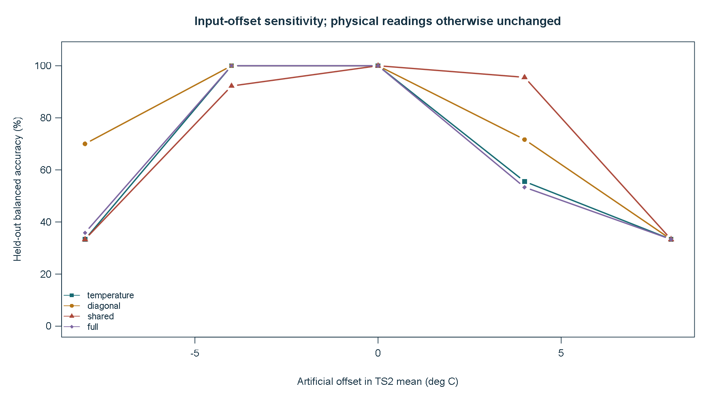
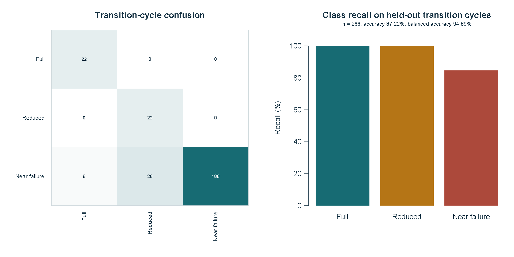
Verification and files
- 63 native R checks passed, including independent covariance, likelihood, MANOVA, Mardia, T2 and missing-input checks.
- R-trained predictions were compared with all 304 saved browser oracle cases. Maximum probability difference: 9.531e-13.
- The slide data, four fitted models and displayed simulation values are exported directly from these R results.
- The R scripts never invoke Python. The original result files are read only in post-fit verification, not in fitting or model selection.
References
- Helwig, Pignanelli and Schuetze, UCI 447, CC BY 4.0: 10.24432/C5CW21.
- R documentation: summary.manova() and optim().
- Mardia (1970): 10.1093/biomet/57.3.519.
- Alternative Hotelling-Lawley reference formula: documented multivariate_stats source. Implemented independently in R for compatibility checking.